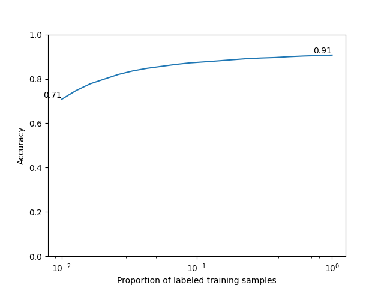

Note
Go to the end to download the full example code.
Self-Supervised Contrastive Learning with SimCLR on MNIST¶
This tutorial demonstrates how to implement and evaluate a SimCLR model [1] for self-supervised contrastive learning on the MNIST dataset using the nidl library.
We will follow these steps:
Load the MNIST dataset.
Define the data augmentations for self-supervised training.
Define the SimCLR model.
Train the model.
Evaluate the transferability of pretrained features on a digit classification task.
The MNIST dataset consists of 60,000 training images and 10,000 test images of handwritten digits (0-9). Each image is 28x28 pixels in grayscale. The dataset is widely used for image processing and machine learning research due to its simplicity and well-defined structure.
Setup¶
This notebook requires some packages besides nidl. Let’s first start with importing our standard libraries below:
import matplotlib.pyplot as plt
import numpy as np
import torch
import torch.nn.functional as func
from lightning_fabric import seed_everything
from sklearn.linear_model import LogisticRegression
from sklearn.metrics import accuracy_score
from torch import nn
from torch.utils.data import DataLoader, Subset
from torchvision import transforms
from torchvision.datasets import MNIST
from tqdm import tqdm
from nidl.estimators.ssl import SimCLR
from nidl.transforms import MultiViewsTransform
from nidl.utils.weights import Weights
We define some global parameters that will be used throughout the notebook.
For this notebook we provide a pre-trained checkpoint to load directly the model. Running the training takes approximately 6 minutes and 350 MB of GPU memory to run. You can set the load_pretrained parameter to False to run training on your device. Note that the pretrained checkpoint is hosted on huggingface so you need to have installed the huggingface_hub library in your environment.
Directory where to download the data
data_dir = "/tmp/mnist"
# Whether to load the pretrained model or train it on your device
load_pretrained = True
# If loading model, directory where to save the weights
model_dir = "/tmp/nidl_example_simclr_mnist"
# What accelerator to use: GPU if available, else CPU
accelerator = "gpu" if torch.cuda.is_available() else "cpu"
# Parameters for the data loaders. Lower values reduce the memory load
# but slow down the execution.
batch_size = 128
num_workers = 10
latent_size = 32
# We fix the seed and generator for reproducibility
seed = 42
rd_generator = np.random.default_rng(seed=seed)
seed = seed_everything(seed)
Data Preparation¶
We’ll use the MNIST dataset, which contains 60,000 training images and 10,000 test images of handwritten digits. We’ll apply standard scaling transforms, the test dataset will be used to evaluate the model performance on the digit recognition task.
Load MNIST dataset with standard scaling.
scale_transforms = transforms.Compose([
transforms.ToTensor(),
transforms.Normalize((0.5,), (0.5,))
])
train_xy_dataset = MNIST(data_dir, download=True, train=True,
transform=scale_transforms)
test_xy_dataset = MNIST(data_dir, download=True, train=False,
transform=scale_transforms)
Dataset and data augmentations for contrastive learning¶
To perform contrastive learning, we need to define a set of data augmentations to create multiple views of the same image. Since we work with grayscale images, we will use random resized crop and Gaussian blur. We reduce the size of the Gaussian kernel to 3x3 since MNIST images are only 28x28 pixels.
Define augmentation transforms for contrastive learning
contrast_transforms = transforms.Compose(
[
transforms.RandomResizedCrop(size=28, scale=(0.8, 1.0)),
transforms.GaussianBlur(kernel_size=3),
transforms.ToTensor(),
transforms.Normalize((0.5,), (0.5,)),
]
)
We define the training and validation dataset to use during the self-supervised training.
ssl_dataset = MNIST(root=data_dir,
download=True,
train=True,
transform=MultiViewsTransform(contrast_transforms, n_views=2))
# We split the training dataset into training and validation splits
n_train = int(0.8*len(ssl_dataset))
indices = rd_generator.permutation(np.arange(len(ssl_dataset)))
train_indices, val_indices = indices[:n_train], indices[n_train:]
train_ssl_dataset = Subset(ssl_dataset, indices=train_indices)
val_ssl_dataset = Subset(ssl_dataset, indices=val_indices)
And finally we create the data loaders for training and testing the models.
Dataloaders with augmented images for self-supervised learning
train_ssl_loader = DataLoader(
train_ssl_dataset,
batch_size=batch_size,
shuffle=True,
pin_memory=True,
num_workers=num_workers,
)
val_ssl_loader = DataLoader(
val_ssl_dataset,
batch_size=batch_size,
shuffle=False,
pin_memory=True,
num_workers=num_workers,
)
# Dataloaders with labels to evaluate the model after pretraining
train_xy_loader = DataLoader(
train_xy_dataset,
batch_size=batch_size,
shuffle=True,
drop_last=False,
num_workers=num_workers,
)
test_xy_loader = DataLoader(
test_xy_dataset,
batch_size=batch_size,
shuffle=False,
drop_last=False,
num_workers=num_workers,
)
/opt/hostedtoolcache/Python/3.12.12/x64/lib/python3.12/site-packages/torch/utils/data/dataloader.py:626: UserWarning: This DataLoader will create 10 worker processes in total. Our suggested max number of worker in current system is 4, which is smaller than what this DataLoader is going to create. Please be aware that excessive worker creation might get DataLoader running slow or even freeze, lower the worker number to avoid potential slowness/freeze if necessary.
warnings.warn(
Model Architecture¶
Since MNIST images are small, we can use a simple LeNet-like architecture as encoder for SimCLR, with few parameters. The output dimension of the encoder is set to 32, which is approximately 30 times smaller that the input, but larger than the number of input classes (10).
class LeNetEncoder(nn.Module):
def __init__(self, latent_size=32):
super().__init__()
self.conv1 = nn.Conv2d(1, 6, kernel_size=5, stride=1, padding=2)
self.pool1 = nn.AvgPool2d(2, 2)
self.conv2 = nn.Conv2d(6, 16, kernel_size=5)
self.pool2 = nn.AvgPool2d(2, 2)
self.fc1 = nn.Linear(16 * 5 * 5, 120)
self.fc2 = nn.Linear(120, 84)
self.fc3 = nn.Linear(84, latent_size)
def forward(self, x):
x = func.relu(self.conv1(x))
x = self.pool1(x)
x = func.relu(self.conv2(x))
x = self.pool2(x)
x = x.view(x.size(0), -1)
x = func.relu(self.fc1(x))
x = func.relu(self.fc2(x))
return self.fc3(x)
encoder = LeNetEncoder(latent_size)
## Training the SimCLR Model Now we’ll configure and train our SimCLR model. We’ll train for only 30 epochs and 100 batches per epoch to demonstrate the learning process.
Create and train SimCLR model
if not load_pretrained:
model = SimCLR(
# Model parameters
encoder=encoder,
proj_input_dim=32,
proj_hidden_dim=64,
proj_output_dim=32,
temperature=0.1,
learning_rate=3e-4,
weight_decay=5e-5,
# Training parameters
limit_train_batches=100,
max_epochs=10,
enable_checkpointing=True,
random_state=seed,
accelerator=accelerator,
devices=1, # Use one GPU
)
model.fit(train_ssl_loader, val_ssl_loader)
if load_pretrained:
# Load model from checkpoint
weights = Weights(
'hf-hub:neurospin/nidl_example_simclr_mnist',
data_dir=model_dir,
filepath='nidl_example_simclr_mnist.ckpt'
)
model = weights.load_checkpoint(
SimCLR,
encoder=encoder,
devices=1,
accelerator=accelerator,
enable_checkpointing=False,
logger=False,
)
# The device on which inference will be done
if accelerator == 'cpu':
device = 'cpu'
elif accelerator == 'gpu':
device = 'cuda:0'
model.to(device)
SimCLR(
(encoder): LeNetEncoder(
(conv1): Conv2d(1, 6, kernel_size=(5, 5), stride=(1, 1), padding=(2, 2))
(pool1): AvgPool2d(kernel_size=2, stride=2, padding=0)
(conv2): Conv2d(6, 16, kernel_size=(5, 5), stride=(1, 1))
(pool2): AvgPool2d(kernel_size=2, stride=2, padding=0)
(fc1): Linear(in_features=400, out_features=120, bias=True)
(fc2): Linear(in_features=120, out_features=84, bias=True)
(fc3): Linear(in_features=84, out_features=32, bias=True)
)
(projection_head): SimCLRProjectionHead(
(layers): Sequential(
(0): Linear(in_features=32, out_features=64, bias=True)
(1): ReLU()
(2): Linear(in_features=64, out_features=32, bias=True)
)
)
(loss): InfoNCE(temperature=0.1)
)
Evaluation on digit classification task¶
Now that the image encoder is pretrained, we want to evaluate whether the learned representations transfer to the digit classification task. We evaluate the obtained representations with linear probing meaning that we fit directly a logistic regression classifier on the learned representation with frozen weights of the encoder.
We study how well we can classify the digits in a small data setting by reducing the number of training samples and measuring accuracy.
Function to extract features and labels from a dataloader and a model
def extract_features(model, dataloader):
# X are the features and y the label of each sample
X, y = [], []
model.eval()
with torch.no_grad():
for batch_idx, batch in tqdm(
enumerate(dataloader),
desc="Extracting features",
):
x_batch, y_batch = batch
x_batch = x_batch.to(model.device)
y_batch = y_batch.to(model.device)
features = model.transform_step(
x_batch, batch_idx=batch_idx
)
X.append(features.detach())
y.append(y_batch.detach())
# Concatenate the features
X = torch.cat(X)
y = torch.cat(y)
# Send to CPU and convert to numpy
X = X.cpu().numpy()
y = y.cpu().numpy()
return X,y
# We first extract the features of the train and test sets
X_train, y_train = extract_features(model, train_xy_loader)
X_test, y_test = extract_features(model, test_xy_loader)
Extracting features: 0it [00:00, ?it/s]
Extracting features: 1it [00:00, 5.67it/s]
Extracting features: 8it [00:00, 34.13it/s]
Extracting features: 17it [00:00, 54.82it/s]
Extracting features: 25it [00:00, 61.81it/s]
Extracting features: 35it [00:00, 71.27it/s]
Extracting features: 44it [00:00, 75.87it/s]
Extracting features: 53it [00:00, 79.73it/s]
Extracting features: 62it [00:00, 79.74it/s]
Extracting features: 71it [00:01, 81.53it/s]
Extracting features: 81it [00:01, 84.79it/s]
Extracting features: 90it [00:01, 85.44it/s]
Extracting features: 99it [00:01, 82.12it/s]
Extracting features: 110it [00:01, 83.30it/s]
Extracting features: 119it [00:01, 84.28it/s]
Extracting features: 128it [00:01, 83.25it/s]
Extracting features: 137it [00:01, 83.46it/s]
Extracting features: 146it [00:01, 84.01it/s]
Extracting features: 155it [00:02, 84.91it/s]
Extracting features: 164it [00:02, 83.67it/s]
Extracting features: 173it [00:02, 84.17it/s]
Extracting features: 182it [00:02, 83.50it/s]
Extracting features: 191it [00:02, 84.36it/s]
Extracting features: 200it [00:02, 84.82it/s]
Extracting features: 209it [00:02, 82.57it/s]
Extracting features: 218it [00:02, 84.46it/s]
Extracting features: 228it [00:02, 86.71it/s]
Extracting features: 237it [00:02, 84.57it/s]
Extracting features: 247it [00:03, 86.06it/s]
Extracting features: 257it [00:03, 87.83it/s]
Extracting features: 266it [00:03, 85.01it/s]
Extracting features: 275it [00:03, 84.83it/s]
Extracting features: 285it [00:03, 85.58it/s]
Extracting features: 295it [00:03, 86.90it/s]
Extracting features: 304it [00:03, 85.52it/s]
Extracting features: 313it [00:03, 85.64it/s]
Extracting features: 322it [00:03, 86.60it/s]
Extracting features: 331it [00:04, 86.55it/s]
Extracting features: 340it [00:04, 86.67it/s]
Extracting features: 349it [00:04, 86.39it/s]
Extracting features: 358it [00:04, 85.32it/s]
Extracting features: 367it [00:04, 84.70it/s]
Extracting features: 376it [00:04, 85.70it/s]
Extracting features: 385it [00:04, 85.01it/s]
Extracting features: 394it [00:04, 86.20it/s]
Extracting features: 403it [00:04, 86.43it/s]
Extracting features: 412it [00:05, 86.37it/s]
Extracting features: 421it [00:05, 85.74it/s]
Extracting features: 430it [00:05, 84.83it/s]
Extracting features: 439it [00:05, 85.48it/s]
Extracting features: 449it [00:05, 85.79it/s]
Extracting features: 469it [00:05, 82.76it/s]
Extracting features: 0it [00:00, ?it/s]
Extracting features: 1it [00:00, 6.95it/s]
Extracting features: 5it [00:00, 22.73it/s]
Extracting features: 14it [00:00, 48.57it/s]
Extracting features: 23it [00:00, 62.92it/s]
Extracting features: 32it [00:00, 70.89it/s]
Extracting features: 41it [00:00, 76.52it/s]
Extracting features: 49it [00:00, 76.28it/s]
Extracting features: 58it [00:00, 80.28it/s]
Extracting features: 76it [00:00, 110.29it/s]
Extracting features: 79it [00:01, 71.81it/s]
We define the linear probe
estimator = LogisticRegression(max_iter=500, random_state=seed, n_jobs=1)
# We evaluate the classifier on different data regimes
train_sizes = np.logspace(np.log10(len(X_train)/100),np.log10(len(X_train)),
20,dtype=int)
accs = []
for size in train_sizes:
estimator.fit(X_train[:size], y_train[:size])
# We predict the targets on the test set and compute accuracy
y_predict = estimator.predict(X_test)
acc = accuracy_score(y_test, y_predict)
accs.append(acc)
We plot the scaling curve and show the lowest and highest accuracies reached
plt.plot(train_sizes/len(X_train), accs)
plt.ylim(0,1)
plt.ylabel('Accuracy')
plt.xlabel('Proportion of labeled training samples')
plt.xscale('log')
plt.text(train_sizes[-1]/len(X_train), accs[-1], f'{accs[-1]:.2f}',
ha='right', va='bottom')
plt.text(train_sizes[0]/len(X_train), accs[0], f'{accs[0]:.2f}',
ha='right', va='bottom')
plt.show()

We reach 90% accuracy on digit classification with self-supervised pretraining using SimCLR. We observe that prediction is already 70% accurate using 1% of the annotated training samples (600 samples over 60,000). This is one of the strenghts of self-supervised learning to reduce the need for annotated data in downstream tasks.
Total running time of the script: (0 minutes 58.205 seconds)
Estimated memory usage: 204 MB